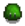

Slime Hutch
| Slime Hutch | |
| Raise up to 20 slimes. Fill water troughs and slimes will create slime balls. | |
| Information | |
| Build cost | |
| Build materials | |
| Animals |  Slimes (any type) |
| Capacity | 20 |
| Size | 7x4 |
The Slime Hutch is a farm building purchasable from Robin at the Carpenter's Shop that stores up to 20 Slimes.
Behavior
After purchasing the Slime Hutch, Marlon will visit the player, providing them with a Slime Egg to start breeding Slimes. The Slime Hutch must contain at least 5 slimes before producing Slime Balls.
The Slime Hutch contains 4 water troughs which must be filled in order for the Slimes to produce Slime Balls. The troughs can be filled by the player using a Watering Can or by placing Sprinklers within range.
Slimes in the hutch will attack the player; obtaining the Slime Charmer Ring will prevent damage and debuffs from the Slimes. Slimes in a Slime Hutch do not award Combat XP or count towards Monster Eradication Goals.
A Random Event can occur whereby a Witch turns all the slimes in a hutch into Black/Transparent Slimes.
Slime Eggs
Building a Slime Hutch unlocks the ability for slimes to occasionally drop Slime Eggs. These can be used in the Slime Hutch to hatch into Slimes. There are currently 5 kinds of Slime Eggs which will hatch into their respective slime colors/patterns: green, blue, red, purple, and tiger.
Eggs can also be generated for the hutch by using 100 Slime in a Slime Egg-Press. While 4 colors can be obtained this way (excluding Tiger Slime eggs), green eggs have a much greater chance of being produced.
Slimes will not drop slime eggs until a Slime Hutch has been built by Robin. However, they will continue to occasionally drop slime eggs even if the Slime Hutch has been demolished.
Mating
Sometimes, a Female slime might mate with a Male slime (which have the round antenna). If both slimes show a heart, they will create a baby slime (same HP as the parents, half the size). One might have a heart and the other an exclamation mark, which means the latter refused the advances of the former.
Mating Color Results
The game randomly picks a method from the following table to determine how the color will be calculated. Using this chosen method each of the red, green, and blue color components of the slime is then calculated independently using the values from the parent Slimes. The most likely method has a separate roll for each color component to determine whether the maximum or the average of the parents' components will be used. [1]
| Chance | Each Color Component (Red, Green, or Blue) |
|---|---|
| 25% | Male Parent Component +/- random 25% |
| 25% | Female Parent Component +/- random 25% |
| 50% | 50%: Maximum of (Male Parent Component or Female Parent Component) 50%: Average of (Male Parent Component and Female Parent Component) |
Notes
- The flooring of the Slime Hutch can be changed.
- Slime Balls will not spawn on crafted flooring.
- Placing a Wicked Statue inside the slime hutch prevents the Witch from cursing it.
- The interior is 16*8 (128 tiles), with 6 occupied tiles on the inside, leaving 122 tiles of usable space remaining. (1 additional tile is blocked by a Slime Incubator at first, but this can be removed with a tool.) This leaves around 13*8 (104 tiles) of space to use for other purposes (kegs, preserves jars, etc.) while still being able to effectively house (and water) 20 slimes.
- If a slime hutch has 20 slimes, the Slime Incubator will continue to incubate eggs indefinitely but the player will not get a notification that the slime egg cannot hatch for lack of space.
Safe Layouts
Three useful items can be placed inside the hutch: Pathway blockers, sprinklers, and crafted flooring. First, arranging fences, statues, or other pathway blockers will isolate the Slimes, making the building safer to enter. The trapped Slimes will still be able to reproduce, and their offspring will also be in isolation; this also applies to the Slime Incubator. Slimes do not physically need to reach the water source, so enclosing them anywhere will do. Note that fencing will still decay as usual. Second, sprinklers can be used to automatically water troughs. Sprinklers inside the Slime Hutch work on any farm, including the Beach Farm. Third, Slime Balls cannot spawn on top of crafted flooring, so it can be used to choose where Slime Balls spawn.
Example design
Example design with accessible Slime Incubators
Interior
Bugs
- Loading a standard save file will prevent slimes in the hutch from breeding until the next morning. Additionally, any troughs that were still filled from the previous day will now be empty and must be refilled (slime ball production for that day is not affected as this happens while you sleep).
- On mobile versions of the game, loading a middle-of-the-day save file (either an Emergency Save or a Backup Save), causes all water troughs to be prematurely emptied. Therefore, Slime Balls will never spawn the following morning. To reliably produce Slime Balls on mobile versions of the game, it is best to fill water troughs at the end of the day, shortly before going to sleep.
References
- ↑ See GreenSlime::mateWith in the game code.
History
- 1.5: Sprinklers can now be used to water troughs.
- 1.6: Slime Hutches are now significantly smaller (11x6 → 7x4). The flooring can be changed and the initial incubator can be removed.
- 1.6.4: Napalm rings are now non-destructive inside the Slime Hutch.
| Buildings | ||
|---|---|---|
| Merchants | Abandoned House • Adventurer's Guild • Blacksmith • Bookseller • Carpenter's Shop • Casino • Desert Trader • Fish Shop • Giant Stump • Harvey's Clinic • Ice Cream Stand • Island Trader • JojaMart • Marnie's Ranch • Oasis • Pierre's General Store • Qi's Walnut Room • The Stardrop Saloon • Traveling Cart • Volcano Dwarf • Wizard's Tower | |
| Houses | 1 River Road • 2 River Road • 1 Willow Lane • 2 Willow Lane • 24 Mountain Road • Elliott's Cabin • Farmhouse • Island Farmhouse • Leah's Cottage • Mayor's Manor • Tent • Trailer • Treehouse | |
| Farm Buildings | Farming | Barn • Cabin • Coop • Fish Pond • Greenhouse • Mill • Pet Bowl • Shed • Silo • Slime Hutch • Stable • Well |
| Special | Desert Obelisk • Earth Obelisk • Farm Obelisk • Gold Clock • Island Obelisk • Junimo Hut • Water Obelisk | |
| Other Buildings | Community Center • Dog Pen • Island Field Office • Joja Warehouse • Movie Theater • Museum • Spa • Witch's Hut | |